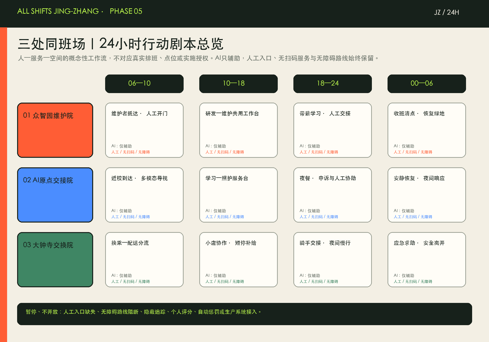
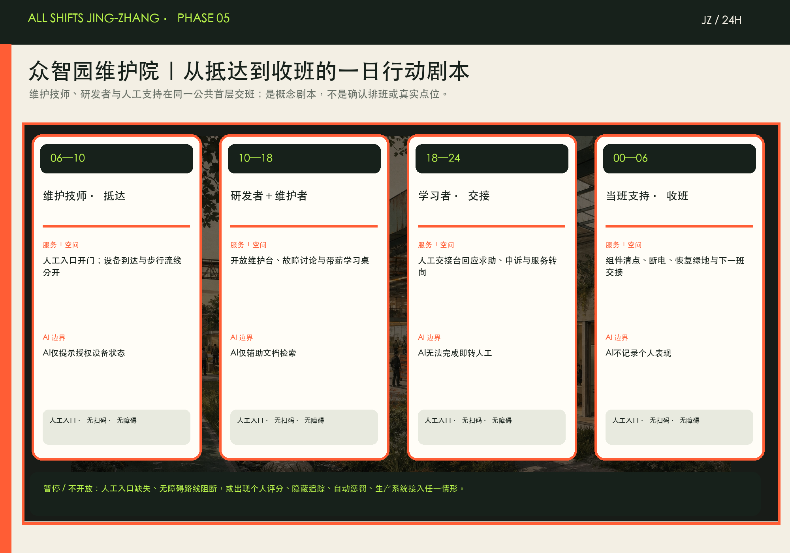
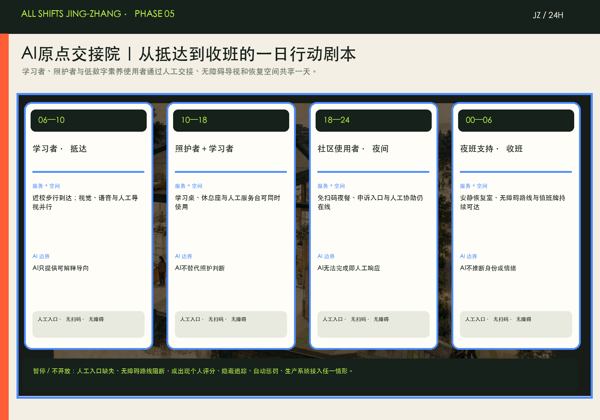
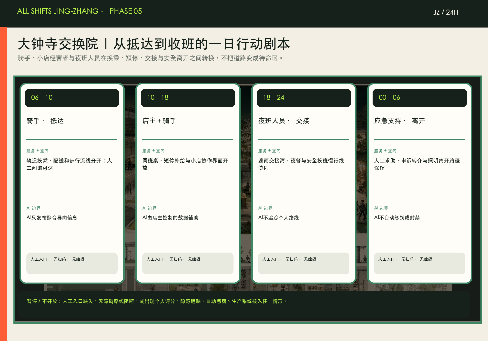

24小时同班驿
休息、饮水、卫生间、储物、充电；无需扫码进入。
让每一种城市劳动都有体面位置。
一条同班主脊、三处同班场、两翼服务网络与十二处同班驿。所有边界均为仓库临时粗略几何，不是官方红线。

研发、绿地、产业服务与社区服务四类概念分区完整覆盖临时范围；建筑基底与拆改留仅为待调查的设计建议。

众智园：研发与维护同场；AI原点社区：学习与照护同场；大钟寺：交换与小店同场。

夜间完整的慢行—轨道支持链，叠加恢复性绿地、公共空间、同班驿和人工服务。道路与市政条件待专项确认。

AI作用于设备、路线和服务交接，不监控或评价劳动者。每个场景都有人工入口、申诉和停用条件。
休息、饮水、卫生间、储物、充电；无需扫码进入。
只读取授权设备日志，辅助故障定位；不评价劳动者。
AI无法完成时一键转人工，并保留可审计交接记录。
将取送、短停、休息与步行流线分开，减少冲突。
现金与人工窗口保留，供夜班热餐和应急物资。
视觉、语音、触觉与人工指引并行。
设备、数据安全与服务技能学习计入工时。
公开系统目的、数据、责任人、申诉和停用状态。
照明、可见性、过街与夜间公交信息共同设计。
为感官敏感、夜班和照护者提供短时低刺激空间。
由店主控制数据，辅助库存、翻译和合规提醒。
提供人工应急、劳动权益转介和系统问题申诉。

公告 1.3—1.5 与 agent.1—agent.6 已映射到合规矩阵；自检状态以 self_check.json 为准。
| ID | 项目 | 分期 | 依赖 |
|---|---|---|---|
| R-01 | 12处同班驿轻量试点 | 近期 | 运营先行；点位须现场核验 |
| R-02 | 三处同班场首层更新 | 近期 | 以安全可用存量建筑为优先 |
| R-03 | 安全换班慢行线 | 近期 | 不替代道路红线与交通审批 |
| R-04 | 零点交班厅与百工荣誉墙 | 中期 | 公开设计竞赛与版权清权 |
| R-05 | 开放维护库 | 中期 | 设备与消防条件待确认 |
| R-06 | 无障碍服务交接网络 | 中期 | 人工岗位与服务SLA先行 |
| R-07 | 公共算法值班制度 | 长期治理 | 先制度后系统 |
| R-08 | 年度同班城市周 | 长期运营 | 不冒充已确定政府活动 |
每季度交班审计、每月开放维护日、每半年无障碍与人工兜底演练、每年同班城市周。劳动者参与设计与测试应付费。
三项可打印模板把“先核验、再共创、后当班”落实为可填写、可交接、可暂停的工作流；它们不等同于实施授权。


不是已确定项目或施工方案。先以付费共创与现场核验定义能否启用；只有通过核验，才运行非生产性维护演示、带薪学习、人工交接与申诉服务。


概念性“人—服务—空间”工作流，不是确认班表、现场调查或实施授权。四段时序始终保留人工入口、无扫码服务与无障碍路线。




静音即可理解的概念导览：四段时序将维护、学习与照护、换乘和夜间安全离开放入同一条人工服务与无障碍路线。它不是现场影像、确认班表或实施授权。
AI 仅辅助；人工入口、无扫码服务和连续无障碍路线始终保留。人工入口缺失、无障碍中断、隐蔽追踪、个人评分、自动惩罚或生产系统接入时，导览所表达的工作流应暂停而非继续。
以下图像用于空间体验沟通，不是现场照片、设计定稿或官方依据。


官方公告与任务书确定范围和任务；六个国际案例只作机制参考；边界、控规、交通、建筑权属、市政、文保和真实班次需求均有显式假设。图件与网页为 agent 原创，页面完全离线。